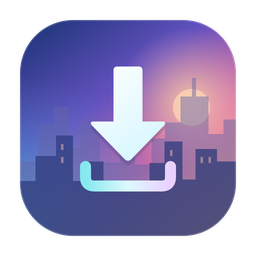
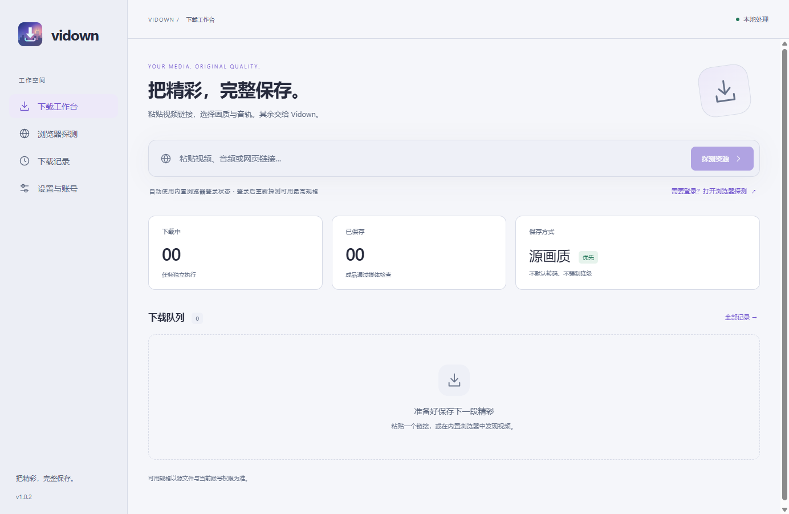
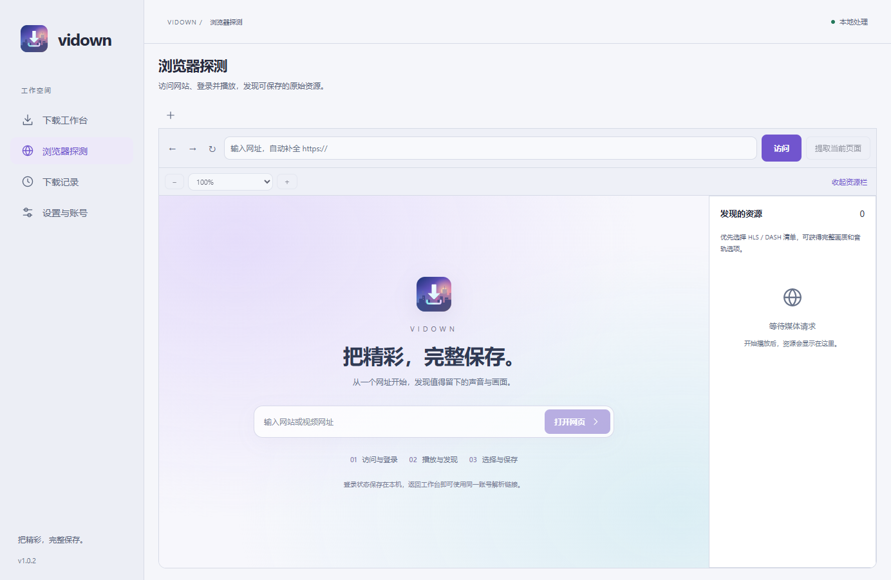

让网页，成为入口。
粘贴链接直接解析，或在内置浏览器中登录、播放与发现。Windows 网页使用系统 WebView2，登录状态保存在本机。

Vidown1.0.2
MADE FOR THE MOMENT
粘贴链接直接解析，或在内置浏览器中登录、播放与发现。Windows 网页使用系统 WebView2，登录状态保存在本机。
视频和音频独立选择。分辨率、编码与动态范围按源返回展示，未知参数明确标注，不凭名称承诺最高画质。
优先保留源编码。适合的组合保存为 MP4，其他组合使用 MKV；下载、合并、验证分别呈现，验证通过才标记完成。

THOUGHTFUL BY DEFAULT
在内置浏览器登录后，回工作台重新解析链接。Cookie 与站点存储保存在本机，不提供外部浏览器 Cookie 导入。
跟随系统、深色或浅色，配合四套主题。轻量过渡可以关闭，没有鼠标微光和持续背景动画。
复制链接可自动填入，解析和下载仍由你触发。记录支持单条或一键删除，可选择将成品移至回收站。
CLEAR ABOUT WHAT WORKS
Vidown 正在持续扩大覆盖范围。网站可播放，不代表一定可以下载；登录成功，也不代表源一定提供目标规格。
Windows x64 · 通用点播 HLS、DASH 与 HTTP · 浏览器辅助发现 · 音视频分轨 · 队列与成品验证。
历史真实样本包含高规格视频和无损音频。其他平台、私有内容及未覆盖规格以逐项验证报告为准，跨平台安装包尚未正式验收。
没有直播录制和频道批量抓取。不绕过 DRM 或账号权限。应用重启后需要重新探测，不能自动续用旧授权。
免费开源。本地运行。由你掌握。
前往 GitHub